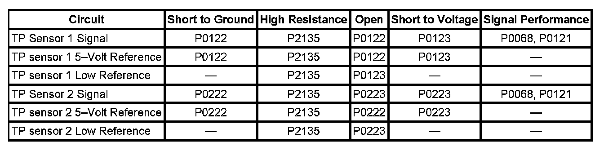
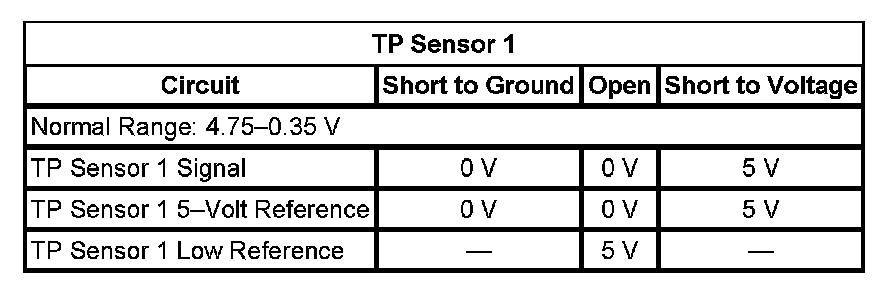
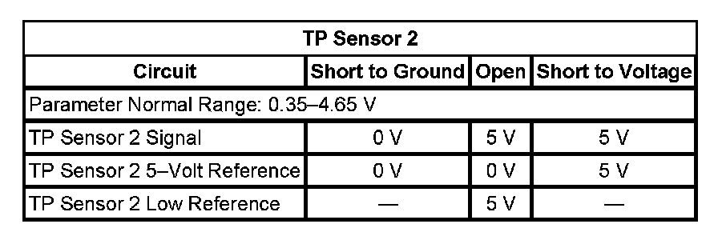

P2135
DTC P0120, P0122, P0123, P0220, P0222, P0223, or P2135
DIAGNOSTIC INSTRUCTIONS
- Perform the Diagnostic System Check - Vehicle prior to using this diagnostic procedure. Initial Inspection and Diagnostic Overview
- Strategy Based Diagnosis for an overview of the diagnostic approach.
- Diagnostic Procedure Instructions provide an overview of each diagnostic category.
DTC DESCRIPTORS
DTC P0120
Throttle Position (TP) Sensor 1 Circuit
DTC P0122
Throttle Position (TP) Sensor 1 Circuit Low Voltage
DTC P0123
Throttle Position (TP) Sensor 1 Circuit High Voltage
DTC P0220
Throttle Position (TP) Sensor 2 Circuit
DTC P0222
Throttle Position (TP) Sensor 2 Circuit Low Voltage
DTC P0223
Throttle Position (TP) Sensor 2 Circuit High Voltage
DTC P2135
Throttle Position (TP) Sensor 1-2 Correlation

DIAGNOSTIC FAULT INFORMATION
TYPICAL SCAN TOOL DATA
TP Sensor 1:

TP Sensor 2:

CIRCUIT/SYSTEM DESCRIPTION
The throttle actuator control (TAC) system uses two throttle position (TP) sensors to monitor the throttle position. The TP sensors 1 and 2 are located within the throttle body assembly. Each sensor has the following circuits:
- A 5-volt reference circuit
- A low reference circuit
- A signal circuit
Two processors are also used to monitor the TAC system data. Both processors are located within the engine control module (ECM). Each signal circuit provides both processors with a signal voltage proportional to throttle plate movement. Both processors monitor each other's data to verify that the indicated TP calculation is correct.
CONDITIONS FOR RUNNING THE DTC
P0120, P0122, P0123, P0220, P0222, and P0223
- DTC P0601, P0602, P0603, P0604, P0606, P0607, P0641, P0651 are not set.
- The system voltage is more than 5.23 volts.
- The ignition is in the Unlock/Accessory or Run position.
- DTC P0120, P0122, P0123, P0220, P0222, P0223 run continuously when the above conditions are met.
P2135
- The system voltage is more than 5.23 volts.
- The ignition is in the Unlock/Accessory or Run position.
- DTC P0120, P0220, P0641, P0651 are not set.
- DTC P2135 runs continuously when the above conditions are met.
CONDITIONS FOR SETTING THE DTC
P0120
TP sensor 1 voltage is less than 0.325 volt or more than 4.75 volts for more than 1 second.
P0122
The ECM detects that the TP sensor 1 voltage is less than 0.325 volt for more than 1 second.
P0123
The ECM detects that the TP sensor 1 voltage is more than 4.75 volts for more than 1 second.
P0220
The TP sensor 2 voltage is less than 0.25 volt or more than 4.59 volts for more than 1 second.
P0222
The ECM detects that the TP sensor 2 voltage is less than 0.25 volt for more than 1 second.
P0223
The ECM detects that the TP sensor 2 voltage is more than 4.59 volts for more than 1 second.
P2135
The difference between the TP sensor 1 and TP sensor 2 exceeds a predetermined value for more than 2 seconds.
ACTION TAKEN WHEN THE DTC SETS
- DTC P0120, P0122, P0123, P0220, P0222, P0223, and P2135 are Type A DTCs.
- The control module commands the TAC system to operate in the Reduced Engine Power mode.
- A message center or an indicator displays Reduced Engine Power.
- Under certain conditions the control module commands the engine OFF.
CONDITIONS FOR CLEARING THE MIL/DTC
DTCs P0120, P0122, P0123, P0220, P0222, P0223, and P2135 are Type A DTCs.
CIRCUIT/SYSTEM VERIFICATION
1. Ignition ON, observe the scan tool TP sensor 1 voltage parameter. The reading should be between 4.75-0.33 volts and change with accelerator pedal input.
2. Ignition ON, observe the scan tool TP sensor 2 voltage parameter. The reading should be between 0.25-4.59 volts and change with accelerator pedal input.
3. Ignition ON, observe the scan tool TP sensor 1 and 2 parameter. The scan tool should indicate agree.
4. Clear the DTCs with the scan tool. Operate the vehicle within the Conditions for Running the DTC, or within the conditions that you observed from the Freeze Frame/Failure Records.
5. Verify that DTC P0120 or P0220 are not the only throttle position DTCs set.
- If DTC P0120 or P0220 are the only DTCs set, replace the control module.
6. Verify that DTCs P0641 or P0651 are not set.
- If DTC P0641 or P0651 is set, refer to DTC P0641 or P0651. P0641 P0651
CIRCUIT/SYSTEM TESTING
1. Ignition OFF, disconnect the harness connector at the throttle body. Allow up to 2 minutes for the ECM to completely power down.
2. Ignition OFF, test for less than 5 ohms of resistance between the low reference circuit terminal C and ground.
- If greater than 5 ohms, test the low reference circuit for an open/high resistance. If the circuit tests normal, replace the ECM.
3. Ignition ON, test for 4.8-5.2 volts between 5-volt reference circuit terminal E and ground.
- If less than 4.8 volts, test 5-volt reference circuit for a short to ground or an open/high resistance. If the circuit tests normal, replace the ECM.
- If greater than 5.2 volts, test the 5-volt reference circuit for a short to voltage. If the circuit tests normal, replace the ECM.
4. Verify the scan tool TP sensor 1 voltage is less than 0.1 volt.
- If greater than 0.1 volt, test the signal circuit terminal D for a short to voltage. If the circuit tests normal, replace the ECM.
5. verify the scan tool TP sensor 2 voltage is greater than 4.8 volts.
- If less than 4.8 volts, test the signal circuit terminal F for a short to ground. If the circuit tests normal, replace the ECM.
6. Install a 3A fused jumper wire between the signal circuit terminal D and the 5-volt reference circuit terminal E of the TP sensor 1. Verify the TP sensor 1 voltage is greater than 4.8 volts.
- If less than 4.8 volts, test the TP sensor 1 signal circuit for a short to ground or an open/high resistance. If the circuit tests normal, replace the ECM.
7. Install a 3A fused jumper wire between the signal circuit terminal F and the low reference circuit terminal C of the TP sensor 2. Verify that the TP sensor 2 voltage is less than 0.1 volt.
- If greater than 1.0 volt, test the TP sensor 2 signal circuit for a short to voltage or an open/high resistance. If the circuit tests normal, replace the ECM.
8. Ignition OFF, disconnect the harness connector at the ECM.
9. Test for less than 5 ohms of resistance on all TP sensor circuits between the following terminals:
- ECM C2 signal circuit terminal 65 to TP terminal D
- ECM C2 signal circuit terminal 63 to TP terminal F
- ECM C2 5-volt reference circuit terminal 3 to terminal E
- If greater than 5 ohms, repair the affected circuit for open/high resistance.
10. Test for infinite resistance between TP sensor 1 signal circuit terminal D and TP sensor signal circuit terminal F.
- If less than infinite resistance, repair the short between TP sensor 1 signal circuit and TP sensor 2 signal circuit.
11. If all circuits test normal, replace the throttle body.
REPAIR INSTRUCTIONS
Perform the Diagnostic Repair Verification after completing the diagnostic procedure.
- Control Module References for ECM replacement, setup, and programming
- Throttle Body Assembly Replacement. Verification Tests